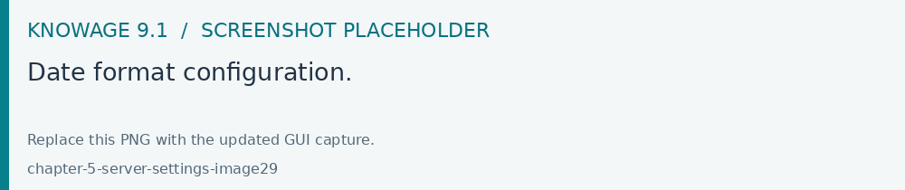
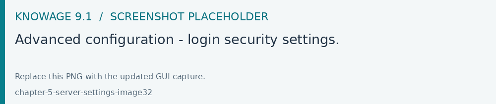
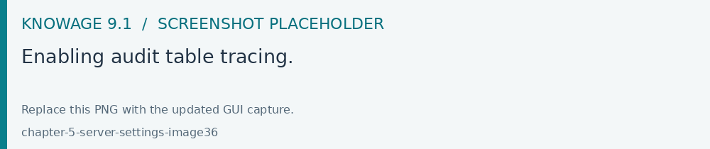

Server settings
In this chapter we will describe all the advanced configuration parameters of Knowage.
Thread manager
For Tomcat: the configuration of the pool of thread is available inside the TOMCAT_HOME/conf/server.xml. Refer to Code below.
1<Resource auth="Container" factory="de.myfoo.commonj.work.FooWorkManagerFactory"
2 maxThreads="5"
3 minThreads="1"
4 queueLength="10"
5 maxDaemons="10"
6 name="wm/SpagoWorkManager"
7 type="commonj.work.WorkManager"/>
The configuration parameters have the following meanings:
minThreads: the minimum number of threads in the thread pool. Default: 2;
maxThreads: the maximum number of threads in the thread pool. Default: 10;
queueLenght: the number of work items that can be queued - 0 means no queuing. Default: 10;
maxDaemons: the maximum number of daemon threads to allow for this work manager. Default: 10.
Cache parameters
First of all, the user must configure the distributed cache. This helps to coordinate the parallel access to the distributed cache, guaranteeing a thread-safe access. It is necessary to configure the hazelcast.xml file (available in the knowage/WEB-INF/classes/) typing in the ”member“ tag the IP address or hostname of the machine on which Knowage is installed (for example <member> 192.168.29.43</member>). In case of multi-node configuration, it is obviously important to report all cluster members. This operation must be carried out on every node. Furthermore, it is possible to implement a finer tuning of the cache behaviour, changing the Knowage configuration. The user must edit some values of the SBI_CONFIG table using the specific administrator interface.
SPAGOBI.CACHE.NAMEPREFIX: It configures the prefix of temporary table in the cache ( Default : ”sbicache“ )
SPAGOBI.CACHE.SPACE_AVAILABLE: It resizes cache dimension (bytes) ( Default : 1024 )
SPAGOBI.CACHE.LIMIT_FOR_CLEAN: It configures the maximum cache section (in percentage) that can be cleaned at runtime when the cache has not enough space to store a dataset. ( Default : 50)
SPAGOBI.CACHE.DS_LAST_ACCESS_TTL: It configures the Time To Live of a dataset inside the cache. This parameter defines the minimum TTL (in seconds) so to guarantee that a dataset remains in cache. A too-high value can lead the cache to breakdown (in this case, there is no way to insert new datasets), while a too low value can lead to situations when there are no certainties of the stability of the dataset in the cache. (Default 600 )
SPAGOBI.CACHE.DATABASE_SCHEMA: Name of the schema on which the tables are created. Such schema is defined by the datasource when it is set as Write-Default. Generally it is not necessary to configure this parameter since it is calculated at runtime. (default <empty> )
SPAGOBI.CACHE.LIMIT_FOR_STORE: It configures the ratio (in percentage) between the dimension of the cache and the maximum dimension of a dataset in the cache. If the dimension of the dataset which the user intends to persist is bigger than the configured percentage, the system blocks the that persistence attempt. ( Default : 10 )
SPAGOBI.CACHE.CREATE_AND_PERSIST_TABLE.TIMEOUT: It represents the maximum time (in seconds) to create temporary table for the dataset. ( Default : 120 )
SPAGOBI.WORKMANAGER.SQLDBCACHE.TIMEOUT: It represents the maximum waiting time (in milliseconds) of an asynchronous work. (Default: 180000 )
SPAGOBI.CACHE.HAZELCAST.TIMEOUT : It represents the maximum time (in seconds) to get a distributed lock. ( Default 120 )
SPAGOBI.CACHE.HAZELCAST.LEASETIME: It represents the maximum time (in seconds) for releasing a distributed lock already got. ( Default :240 )
SPAGOBI.CACHE.SCHEDULING_FULL_CLEAN: It schedules the recurring operation of complete cleaning of the cache. This periodic cleaning delete all dataset in the cache, without considering further parameters. At the end of the cleaning, the cache is empty. The allowable values are:
Option |
Description |
|---|---|
EVERY_1_MIN(“EVERY_1_MIN”, “0 0/1 * 1/1 * ? * “) |
every minute starting the changing of hour |
EVERY_10_MINS(“EVERY_10_MINS”, “0 0/10 * 1/1 * ? * “) |
every 10 minutes starting the changing of hour |
EVERY_15_MINS(“EVERY_15_MINS”,”0 0/15 * 1/1 * ? * “) |
every 15 minutes starting the changing of hour |
EVERY_20_MINS(“EVERY_20_MINS”, “0 0/20 * 1/1 * ? * “) |
every 20 minutes starting the changing of hour |
EVERY_30_MINS(“EVERY_30_MINS”, “0 0/30 * 1/1 * ? * “) |
every 30 minutes starting the changing of hour |
HOURLY(“HOURLY”,”0 0 0/1 1/1 * ? * “) |
every hour |
DAILY(“DAILY”,”0 0 0 1/1 * ? * “) |
every day at midnight |
WEEKLY(“WEEKLY”, “0 0 0 ? * SUN * “) |
every week at midnight on Sunday |
MONTHLY(“MONTHLY”, “0 0 0 1 1/1 ? * “) |
at midnight on the first day of the month |
YEARLY(“YEARLY”, “0 0 0 1 1 ? * “) |
at midnight on the first day of the year |
Any value other than those listed above does not enable periodic cleaning. ( Default: DAILY )
Logging
Knowage uses the component Log4J to create the log applications. Each web application has its own file inside the folder /knowageXXXX/WEB-INF/classes/log4j2.xml. The content of this file change accordingly to the settings: the appenders allows to modify the level of the log. As an example, in the following code block, we analyze the log file of Knowage. In the first part we can set the generation mechanism of the log file, while in the second one the level of tracing.
1<?xml version="1.0" encoding="UTF-8"?>
2<Configuration status="info">
3<Appenders>
4 <RollingFile
5 name="KNOWAGE_DATASET_AUDIT"
6 append="true"
7 filePattern="${sys:catalina.base}/logs/knowageDatasetAudit.%d{yyyy-MM-dd}.log"
8 ignoreExceptions="true"
9 createOnDemand="true">
10 <PatternLayout>
11 <Pattern>%d{ISO8601_OFFSET_DATE_TIME_HHCMM} [%u{RANDOM}] %5p [%t] [%c.%M:%L] [%X{correlationId}/%X{jSessionId}] [%X{environment}] [%X{tenant}]%n%message%n%xThrowable</Pattern>
12 </PatternLayout>
13 <Policies>
14 <TimeBasedTriggeringPolicy />
15 </Policies>
16 <DirectWriteRolloverStrategy/>
17 </RollingFile>
18 <RollingFile
19 name="KNOWAGE_HIERARCHIES"
20 append="true"
21 filePattern="${sys:catalina.base}/logs/knowageHiearchies.%d{yyyy-MM-dd}.log"
22 ignoreExceptions="true"
23 createOnDemand="true">
24 <PatternLayout>
25 <Pattern>%d{ISO8601_OFFSET_DATE_TIME_HHCMM} [%u{RANDOM}] %5p [%t] [%c.%M:%L] [%X{correlationId}/%X{jSessionId}] [%X{environment}] [%X{tenant}]%n%message%n%xThrowable</Pattern>
26 </PatternLayout>
27 <Policies>
28 <TimeBasedTriggeringPolicy />
29 </Policies>
30 <DirectWriteRolloverStrategy/>
31 </RollingFile>
32 <RollingFile
33 name="KNOWAGE_CORE"
34 append="true"
35 filePattern="${sys:catalina.base}/logs/knowage.%d{yyyy-MM-dd}.log"
36 ignoreExceptions="true"
37 createOnDemand="true">
38 <PatternLayout>
39 <Pattern>%d{ISO8601_OFFSET_DATE_TIME_HHCMM} [%u{RANDOM}] %5p [%t] [%c.%M:%L] [%X{correlationId}/%X{jSessionId}] [%X{environment}] [%X{tenant}]%n%message%n%xThrowable</Pattern>
40 </PatternLayout>
41 <Policies>
42 <TimeBasedTriggeringPolicy />
43 </Policies>
44 <DirectWriteRolloverStrategy/>
45 </RollingFile>
46 <RollingFile
47 name="KNOWAGE_RESOURCE_EXPORT_FOLDER_CLEANING_MANAGER"
48 append="true"
49 filePattern="${sys:catalina.base}/logs/knowageResourceExportFolderCleaningManager.%d{yyyy-MM-dd}.log"
50 ignoreExceptions="true"
51 createOnDemand="true">
52 <PatternLayout>
53 <Pattern>%d{ISO8601_OFFSET_DATE_TIME_HHCMM} [%u{RANDOM}] %5p [%t] [%c.%M:%L] [%X{correlationId}/%X{jSessionId}] [%X{environment}] [%X{tenant}]%n%message%n%xThrowable</Pattern>
54 </PatternLayout>
55 <Policies>
56 <TimeBasedTriggeringPolicy />
57 </Policies>
58 <DirectWriteRolloverStrategy/>
59 </RollingFile>
60 <RollingFile
61 name="KNOWAGE_SERVER_MANAGER"
62 append="true"
63 filePattern="${sys:catalina.base}/logs/knowageServerManager.%d{yyyy-MM-dd}.log"
64 ignoreExceptions="true"
65 createOnDemand="true">
66 <PatternLayout>
67 <Pattern>%d{ISO8601_OFFSET_DATE_TIME_HHCMM} [%u{RANDOM}] %5p [%t] [%c.%M:%L] [%X{correlationId}/%X{jSessionId}] [%X{environment}] [%X{tenant}]%n%message%n%xThrowable</Pattern>
68 </PatternLayout>
69 <Policies>
70 <TimeBasedTriggeringPolicy />
71 </Policies>
72 <DirectWriteRolloverStrategy/>
73 </RollingFile>
74 <RollingFile
75 name="KNOWAGE_QUARTZ"
76 append="true"
77 filePattern="${sys:catalina.base}/logs/knowageQuartz.%d{yyyy-MM-dd}.log"
78 ignoreExceptions="true"
79 createOnDemand="true">
80 <PatternLayout>
81 <Pattern>%d{ISO8601_OFFSET_DATE_TIME_HHCMM} [%u{RANDOM}] %5p [%t] [%c.%M:%L] [%X{correlationId}/%X{jSessionId}] [%X{environment}] [%X{tenant}]%n%message%n%xThrowable</Pattern>
82 </PatternLayout>
83 <Policies>
84 <TimeBasedTriggeringPolicy />
85 </Policies>
86 <DirectWriteRolloverStrategy/>
87 </RollingFile>
88 <RollingFile
89 name="KNOWAGE_OPERATOR_TRACE"
90 append="true"
91 filePattern="${sys:catalina.base}/logs/knowage_OperatorTrace.%d{yyyy-MM-dd}.log"
92 ignoreExceptions="true"
93 createOnDemand="true">
94 <PatternLayout>
95 <Pattern>%d{ISO8601_OFFSET_DATE_TIME_HHCMM} [%u{RANDOM}] %5p [%t] [%c.%M:%L] [%X{correlationId}/%X{jSessionId}] [%X{environment}] [%X{tenant}]%n%message%n%xThrowable</Pattern>
96 </PatternLayout>
97 <Policies>
98 <TimeBasedTriggeringPolicy />
99 </Policies>
100 <DirectWriteRolloverStrategy/>
101 </RollingFile>
102</Appenders>
103<Loggers>
104 <logger name="audit" additivity="false" level="info">
105 <AppenderRef ref="KNOWAGE_OPERATOR_TRACE" />
106 </logger>
107 <logger name="com.hazelcast" level="error">
108 <AppenderRef ref="KNOWAGE_CORE" />
109 </logger>
110 <logger name="dataset.audit" additivity="false" level="error">
111 <AppenderRef ref="KNOWAGE_DATASET_AUDIT" />
112 </logger>
113 <logger name="it.eng" additivity="false" level="error">
114 <AppenderRef ref="KNOWAGE_CORE" />
115 </logger>
116 <logger name="it.eng.knowage.mail.MailSessionBuilder" additivity="false" level="warn">
117 <AppenderRef ref="KNOWAGE_CORE" />
118 </logger>
119 <logger name="it.eng.knowage.tools.servermanager" additivity="false" level="error">
120 <AppenderRef ref="KNOWAGE_SERVER_MANAGER" />
121 </logger>
122 <logger name="it.eng.spagobi.api.v2.export" additivity="false" level="error">
123 <AppenderRef ref="KNOWAGE_CORE" />
124 </logger>
125 <logger name="it.eng.spagobi.behaviouralmodel.lov.bo.QueryDetail" additivity="false" level="error">
126 <AppenderRef ref="KNOWAGE_CORE" />
127 </logger>
128 <logger name="it.eng.spagobi.commons.utilities.messages" level="error">
129 <AppenderRef ref="KNOWAGE_CORE" />
130 </logger>
131 <logger name="it.eng.spagobi.commons.utilities.urls.WebUrlBuilder" level="error">
132 <AppenderRef ref="KNOWAGE_CORE" />
133 </logger>
134 <logger name="it.eng.spagobi.tools.dataset.associativity.strategy.OuterAssociativityManager" level="warn" additivity="false">
135 <AppenderRef ref="KNOWAGE_CORE" />
136 </logger>
137 <logger name="it.eng.spagobi.tools.dataset.common.dataproxy.JDBCBigQueryDataProxy" level="info" additivity="false">
138 <AppenderRef ref="KNOWAGE_DATASET_AUDIT" />
139 </logger>
140 <logger name="it.eng.spagobi.tools.dataset.common.dataproxy.JDBCDataProxy" level="info" additivity="false">
141 <AppenderRef ref="KNOWAGE_DATASET_AUDIT" />
142 </logger>
143 <logger name="it.eng.spagobi.tools.dataset.common.dataproxy.JDBCPostgreSQLDataProxy" level="info" additivity="false">
144 <AppenderRef ref="KNOWAGE_DATASET_AUDIT" />
145 </logger>
146 <logger name="it.eng.spagobi.tools.dataset.common.dataproxy.JDBCRedShiftDataProxy" level="info" additivity="false">
147 <AppenderRef ref="KNOWAGE_DATASET_AUDIT" />
148 </logger>
149 <logger name="it.eng.spagobi.tools.dataset.common.dataproxy.JDBCSpannerDataProxy" level="info" additivity="false">
150 <AppenderRef ref="KNOWAGE_DATASET_AUDIT" />
151 </logger>
152 <logger name="it.eng.spagobi.tools.dataset.common.dataproxy.JDBCSynapseDataProxy" level="info" additivity="false">
153 <AppenderRef ref="KNOWAGE_DATASET_AUDIT" />
154 </logger>
155 <logger name="it.eng.spagobi.tools.dataset.common.dataproxy.SolrDataProxy" level="info" additivity="false">
156 <AppenderRef ref="KNOWAGE_DATASET_AUDIT" />
157 </logger>
158 <logger name="it.eng.spagobi.tools.dataset.graph.associativity.container.InlineViewAssociativeDatasetContainer" level="warn" additivity="false">
159 <AppenderRef ref="KNOWAGE_CORE" />
160 </logger>
161 <logger name="it.eng.spagobi.tools.hierarchiesmanagement.service.rest" additivity="false" level="error">
162 <AppenderRef ref="KNOWAGE_HIERARCHIES" />
163 </logger>
164 <logger name="org.hibernate" level="error">
165 <AppenderRef ref="KNOWAGE_CORE" />
166 </logger>
167 <logger name="org.jbpm" level="error">
168 <AppenderRef ref="KNOWAGE_CORE" />
169 </logger>
170 <logger name="org.quartz" additivity="false" level="error">
171 <AppenderRef ref="KNOWAGE_QUARTZ" />
172 </logger>
173 <logger name="it.eng.spagobi.tools.scheduler.init.QuartzInitializer" additivity="false" level="error">
174 <AppenderRef ref="KNOWAGE_QUARTZ" />
175 </logger>
176 <!--
177 <logger name="Spago" level="error" additivity="false">
178 <AppenderRef ref="KNOWAGE_CORE" />
179 </logger>
180 -->
181 <logger name="it.eng.spagobi.commons.utilities.ObjectsAccessVerifier" level="error" additivity="false">
182 <AppenderRef ref="KNOWAGE_CORE" />
183 </logger>
184 <logger name="it.eng.knowage.functionscatalog.utils.CatalogFunctionDataProxy" level="error" additivity="false">
185 <AppenderRef ref="KNOWAGE_CORE" />
186 </logger>
187 <logger name="it.eng.knowage.encryption.DecryptionDataStoreTransformer" level="error" additivity="false">
188 <AppenderRef ref="KNOWAGE_CORE" />
189 </logger>
190 <logger name="it.eng.knowage.encryption.DataEncryptionInitializer" level="error" additivity="false">
191 <AppenderRef ref="KNOWAGE_CORE" />
192 </logger>
193 <logger name="privacymanager.wrapper.PrivacyManagerAPIImpl" level="error" additivity="false">
194 <AppenderRef ref="KNOWAGE_CORE" />
195 </logger>
196 <logger name="it.eng.knowage.privacymanager.PrivacyManagerDataStoreTransformer" level="error" additivity="false">
197 <AppenderRef ref="KNOWAGE_CORE" />
198 </logger>
199 <logger name="it.eng.knowage.privacymanager.PMConfiguration" level="error" additivity="false">
200 <AppenderRef ref="KNOWAGE_CORE" />
201 </logger>
202 <logger name="it.eng.knowage.privacymanager.EventBuilderUtils" level="error" additivity="false">
203 <AppenderRef ref="KNOWAGE_CORE" />
204 </logger>
205 <logger name="it.eng.spagobi.tools.dataset.actions.AbstractDatasetActionsChecker" level="error" additivity="false">
206 <AppenderRef ref="KNOWAGE_CORE" />
207 </logger>
208 <logger name="it.eng.spagobi.utilities.locks.listeners.HazelcastContextListener" level="error" additivity="false">
209 <AppenderRef ref="KNOWAGE_CORE" />
210 </logger>
211 <logger name="it.eng.spagobi.utilities.locks.DistributedLockFactory" level="error" additivity="false">
212 <AppenderRef ref="KNOWAGE_CORE" />
213 </logger>
214 <logger name="it.eng.spagobi.security" level="info" additivity="false">
215 <AppenderRef ref="KNOWAGE_CORE" />
216 </logger>
217 <Root level="error">
218 <AppenderRef ref="KNOWAGE_CORE" />
219 </Root>
220</Loggers>
221</Configuration>
If the user wishes to enable the tracing of the information to DEBUG level it is enough to modify the following line
1 log4j.logger.it.eng.spagobi=ERROR, SpagoBI, CONSOLE
in
1log4j.logger.it.eng.spagobi=DEBUG, SpagoBI, CONSOLE
For further details we refer to the official Log4J documents.
Mail server
Knowage uses in some situations the mail server to send emails. The configuration of this feature can be done right straight through the Knowage GUI, after accessing with administrator credentials.
Selecting the category MAIL the user gets the list of parameters to configure for the following profiles:
trustedStore;
scheduler, used by the scheduler to send a report by mail;
user, used directly by the user when he intends to send a report by mail;
kpi_alarm, used by the alarm component to send mails.
Fig. 720 Mail server configuration.
Moreover, each profile has the following values:
smtphost: the smpt server,
Smtpport: the port in use,
from: the address to which the mail will be associated,
user: the user of the server connection,
password: user’s password,
security: the user must choose between NONE, SSL and STARTTLS.
Maximum file size
For security reasons, Knowage has a series of parameters which manage the maximum file size that can be loaded on the server through the web GUI. To modify those parameters, it is required to enter the Knowage server application as administrator and access the ”server settings“ section and then ”configuration management“. The parameters at issue are the following:
SPAGOBI.TEMPLATE_MAX_SIZE : TEMPLATE MAX SIZE: it is the maximum template dimension of an analytical document, expressed in bytes; the default value is 5MB;
SPAGOBI.DATASET_FILE_MAX_SIZE : DATASET FILE MAX SIZE: it is the maximum dimension of a file used as a dataset, expressed in bytes; the default value is 10MB;
SPAGOBI.DOCUMENTS.MAX_PREVIEW_IMAGE_SIZE : Max preview image size: it is the maximum dimension of an image used as document preview (in the document browser, for instance), expressed in bytes; the default is 1MB;
IMAGE_GALLERY.MAX_IMAGE_SIZE_KB : Max image size in Kb: it is the maximum size of the images that can be used in a cockpit creation; the default is 1MB;
Date format
Knowage allows the user to visualize the date time in a format that depends on the selected language. To change the visualization of such formats, the user must enter Knowage as administrator and access the “Server Settings“ section and, consequently, the ”Configuration management“. Then finally select ”DATE-FORMAT“.

Fig. 721 Date format configuration.
For each available language there are two parameters:
SPAGOBI.DATE-FORMAT-<lingua>_<nazione>.format: it rules the back-end role;
SPAGOBI.DATE-FORMAT-<lingua>_<nazione>.extJsFormat: it rules the front-end role.
We suggest to set the parameters in compliance with each other, according to a local data.
The parameters SPAGOBI.DATE-FORMAT-SERVER.format and SPAGOBI.DATE-FORMAT-SERVER.extJsFormat control the link between back-end and front-end. The adjustment of these parameters do not affect the web GUI.
Language
Knowage manages the multi-language. The list of all languages is manageable from the “Server Settings” section. Go to “Configuration management“ and select the LANGUAGE_SUPPORTED category. Here there are two properties:
SPAGOBI.LANGUAGE_SUPPORTED.LANGUAGES: the list of all supported languages underneath this formalism are: [it,IT],[en,US],[fr,FR],[es,ES];
SPAGOBI.LANGUAGE_SUPPORTED.LANGUAGE.default: the default value is [en,US].
Adding languages
Configure the supported locale list and its default in Configuration Management, then add the corresponding language domain entry where required. For user-defined business labels, use How use Localization Management.
Interface translations for the Vue application are maintained in the frontend
source under src/i18n/<locale>/. Changes to these messages require the
matching frontend build and deployment. Backend and engine messages use their
packaged localization resources. Coordinate a complete locale with the
maintainers and validate sign-in, parameters, dates, numbers and exports in that
locale.
Password constraints settings
User password constraints can be set configuring parameters below:
changepwdmodule.change: if true, new password must be different from the latest;
changepwd.change_first: if true, password must be changed at first login;
changepwd.disactivation_time: number of months elapsed since the last login before password deactivation;
changepwd.expired_time: number of days for the password expiration.
By default, all above configurations are disabled.
Login security settings
Login security configurations can be set filling fields below:
internal.security.login.checkForMaxFailedLoginAttempts: if active and set to true, users will only be able to access Knowage if they have not reached the maximum number of failed login attempts;
internal.security.login.maxFailedLoginAttempts: the maximum number of failed login attempts.

Fig. 722 Advanced configuration - login security settings.
Session timeout settings
Knowage can automatically end a user session after a configurable period of inactivity and warn the user before doing so.
Session timeout configurations can be set by accessing the Server Settings section in the administrator interface and opening Configuration Management. Search for or create the following parameters:
KNOWAGE.SESSION_TIMEOUT: duration of inactivity (in milliseconds) after which the session is considered expired and the user is forcibly logged out. Default:
1800000(30 minutes).KNOWAGE.SESSION_WARNING_ADVANCE: how many milliseconds before the session expires the warning notification is shown to the user. Must be less than
KNOWAGE.SESSION_TIMEOUT. Default:300000(5 minutes).
Note
The session timer is based on the timestamp of the last successful
response received from the server, stored in the browser’s
localStorage. Closing and reopening the browser does not reset
the timer: if the elapsed time since the last interaction exceeds
KNOWAGE.SESSION_TIMEOUT, the user is immediately redirected to the
login page with a “Session expired” message.
Warning
To disable the automatic session timeout, set KNOWAGE.SESSION_TIMEOUT
to 0 in Configuration Management. This prevents both the warning
notification and the forced logout from ever triggering.
When the remaining time falls below KNOWAGE.SESSION_WARNING_ADVANCE, a
persistent warning banner appears at the top of the page.
The user can click Stay connected to renew the session; otherwise, when
the full timeout elapses, the application logs the user out automatically and
redirects to the login page. After re-authenticating, the user is returned to
the page they were on before the session expired.
Example — session expires after 1 hour, warning shown 10 minutes before:
KNOWAGE.SESSION_TIMEOUT = 3600000 (1 hour in ms)
KNOWAGE.SESSION_WARNING_ADVANCE = 600000 (10 minutes in ms)
Resource export folder cleaning settings
Resource export folder cleaning configurations can be set filling fields below:
KNOWAGE.RESOURCE.EXPORT.FOLDER.CLEANING_PERCENTAGE: if active, the cleaning procedure will delete the files contained in the export resource folder leaving this percentage of free space (0 - 100). Default 30;
KNOWAGE.RESOURCE.EXPORT.FOLDER.MAX_FOLDER_SIZE: if active, cleaning procedure will start only if the resource export folder will reach this size (byte). Default 10737418240.
Import / Export
Users
Specific configurations for users import procedure:
IMPORTEXPORT.USER.DEFAULT_PASSWORD: password set for all users imported by the import procedure.
Changing the secret key for password encryption
The secret password encryption key must be set during the installation and must never be changed. In case that the secret key is lost you must create a new one and update database passwords. For this reason Knowage provides you a tool to find out the new encrypted value.
This tool requires:
knowage-utils-<major.minor.patch>.jar (e.g. knowage-utils-8.0.1.jar) library to be added to the classpath
the password encryption secret file name with complete path
password value (plaintext)
Below is an example of invoking the tool using biadmin as plaintext password.
1java -cp "TOMCAT_HOME/webapps/knowage/WEB-INF/lib/knowage-utils-<major.minor.patch>.jar" it.eng.spagobi.security.utils.PasswordEncryptionToolMain password/encryption/secret/file/name/with/complete/path biadmin
The output value will be the second argument passed in input encrypted with the key present in the file. This procedure must be repeated for all users.
Audit Table Management
The audit table tracks documents changes and other operations made to knowage data at the database level. User can enable audit table tracing (database table name: SBI_AUDIT) setting the KNOWAGE.AUDIT_ENABLED property to true inside Configuration Management panel:

Fig. 723 Enabling audit table tracing.
The KNOWAGE.AUDIT_DATA_RETENTION property is used to set the retention period, in order to manage audit table cleanup.
XSLX Export
Within the Cockpit and the Dashboard, it is possible to choose whether to display the sheets that contain information about analytical drivers and selections. This can be configured by setting the following options.
Cockpit
1COCKPIT.EXPORT.SHOW_FILTER = true/false
Dashboard
1DASHBOARD.EXPORT.SHOW_DRIVERS_SHEET = true/false
2DASHBOARD.EXPORT.SHOW_SELECTIONS_SHEET = true/false